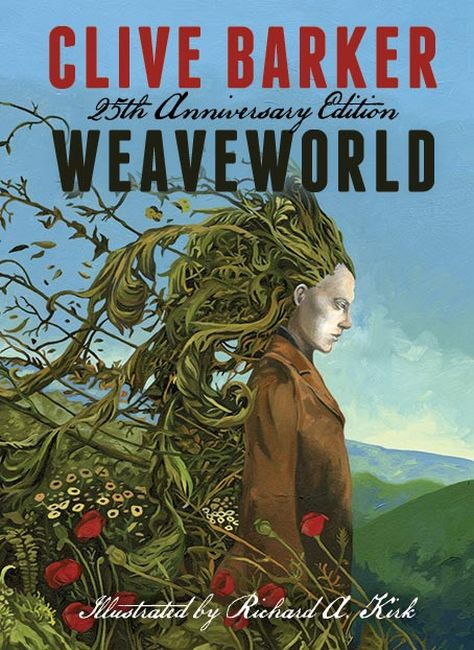
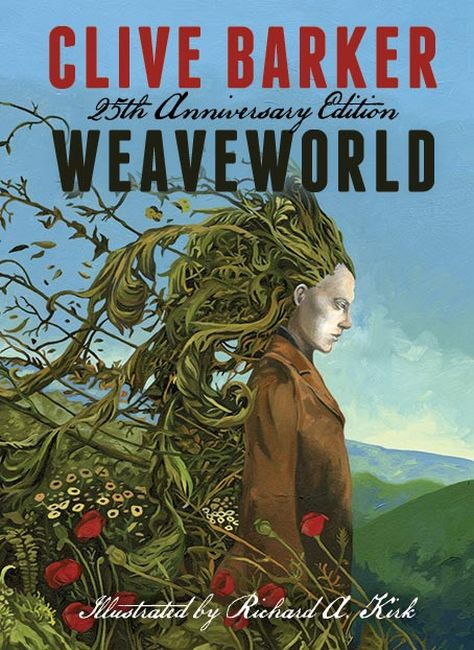

 Weaveworld is a 1987 dark fantasy novel by Clive Barker. It is about a magical world that is hidden inside a tapestry, known as the Fugue, to safeguard it from both inquisitive humans and hostile supernatural foes. Two normal people become embroiled in the fate of the Fugue, attempting to save it from those who seek to destroy it. The book was nominated in 1988 for the World Fantasy Award for Best Novel.
Decades prior to the book's opening, a magical race known as the Seerkind combined all of their powers to create a secret world known as "the Fugue", a carpet into which they wove their most beloved locations, animals, possessions and themselves as a safe haven. Their aim was to avoid persecution by humans (who call them demons and fairies) and eradication by a destructive being known as the Scourge.
This creature's nature is entirely unknown to the Seerkind, given that nobody has survived to describe it. The Fugue, resembling an ordinary, albeit exquisitely woven, carpet is left in the care of a normal woman, Mimi Laschenski, who married one of the Seerkind and resides in Liverpool, England.